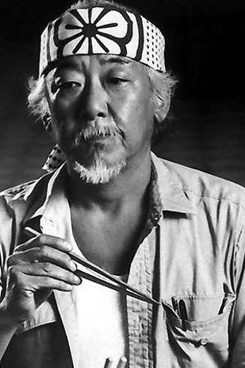

Já pensou como seria sua vida se soubesse a arte do karatê? Ser treinado pelo próprio campeão de 84 Daniel Larusso? Aprender as tecnicas do Goju Ryu Karate-Do do grande sensei Keisuke Miyagi, como o golpe da garça e cura de torcimentos? Isso através do método inovador "pintaceca" e "polisao"? Só é possível aqui no Myagi Do!
O que você será capaz de fazer ao final do curso: